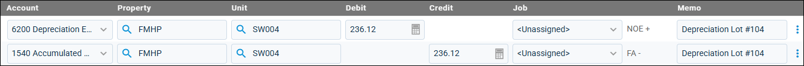

Source: https://rmxhelp.rentmanager.com/Topics/Express/Action/Assets-Depreciation-Schedule-Update.htm
Manually Update Asset Depreciation Schedule
In certain circumstances, an asset's value may change further outside of the set depreciation schedule. For example, perhaps the asset is rehabilitated and regains thousands of dollars in value. Or perhaps the asset is damaged, and the value is seriously impaired or needs to be written off. In these instances, a journal entry can be manually created that links to and adjusts the future depreciation of the asset.
Related Privileges
| Group | Privilege | Column |
|---|---|---|
| Accounting | Journal entries | Add, View |
| Asset Management | Manage Assets | View |
| Depreciation Schedules | Edit |
For more information, refer to Control User Access.
To manually update an asset depreciation schedule, do the following:
-
Go to
 arrow_forward Rental Info arrow_forward General arrow_forward Assets and select an asset from the list.
arrow_forward Rental Info arrow_forward General arrow_forward Assets and select an asset from the list.
The asset's details page displays. -
On the action bar to the right, click
 arrow_forward Depreciation History.
arrow_forward Depreciation History.
The Depreciation History pop-up displays. -
Click
 Add Journal Entry.
Add Journal Entry.
The Add Journal pop-up displays. -
Enter the journal entry using the Depreciation Expense and Accumulated Depreciation accounts defined when creating the depreciation schedule. For more information, refer to Journal Details (Page).

-
Click Save and New to continue adding journal entries. Otherwise, click Save and Close to close the pop-up.
The journal entry is created, and the depreciation schedule is updated to display the new Current Book Value and updated calculations for future postings.